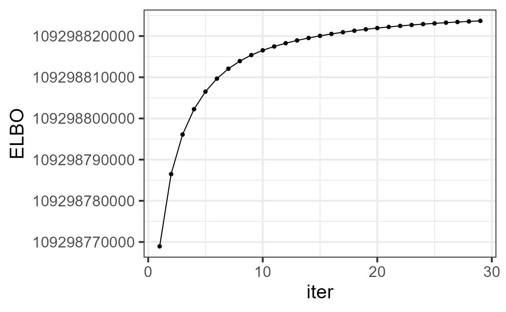

simu2_MMGFM.RmdThis vignette introduces the usage of MMGFM for the analysis of high-dimensional multi-study multi-modality data with additional covariates, by comparison with other methods.
The package can be loaded with the command:
library(MMGFM)
#> Loading required package: irlba
#> Loading required package: Matrix
#> MMGFM : We introduce a generalized factor model designed to jointly analyze high-dimensional multi-modality data from multiple studies by extracting study-shared and specified factors. Our factor models account for heterogeneous noises and overdispersion among modality variables with augmented covariates. We propose an efficient and speedy variational estimation procedure for estimating model parameters, along with a novel criterion for selecting the optimal number of factors. More details can be referred to Liu et al. (2024) <doi:10.48550/arXiv.2408.10542>.Next, we load some functions for subsequent use.
source("https://raw.githubusercontent.com/feiyoung/MMGFM/refs/heads/main/simu_code/definedFunc.R")
#> Loading required package: doSNOW
#> Loading required package: foreach
#> Loading required package: iterators
#> Loading required package: snow
#> Loading required package: parallel
#>
#> Attaching package: 'parallel'
#> The following objects are masked from 'package:snow':
#>
#> closeNode, clusterApply, clusterApplyLB, clusterCall, clusterEvalQ,
#> clusterExport, clusterMap, clusterSplit, makeCluster, parApply,
#> parCapply, parLapply, parRapply, parSapply, recvData, recvOneData,
#> sendData, splitIndices, stopCluster
#> GFM : Generalized factor model is implemented for ultra-high dimensional data with mixed-type variables.
#> Two algorithms, variational EM and alternate maximization, are designed to implement the generalized factor model,
#> respectively. The factor matrix and loading matrix together with the number of factors can be well estimated.
#> This model can be employed in social and behavioral sciences, economy and finance, and genomics,
#> to extract interpretable nonlinear factors. More details can be referred to
#> Wei Liu, Huazhen Lin, Shurong Zheng and Jin Liu. (2021) <doi:10.1080/01621459.2021.1999818>. Check out our Package website (https://feiyoung.github.io/GFM/docs/index.html) for a more complete description of the methods and analysesFirst, we generate the simulated data from three data sources and five modalities, with first modalities consisting of continuous variables and last three modalities composed by count variables.
q <- 3
qsvec <- rep(2,3)
sigma_eps <- 1
datlist <- gendata_MM(seed = 1, nvec = c(300, 200, 100),
pveclist = list('gaussian'=c(100, 200),'poisson'=c(50, 150, 200)),
q = q, d= 3,qs = qsvec, rho = c(3, 2), rho_z=0.5,
sigmavec=c(0, 0), sigma_eps=sigma_eps)
XList <- datlist$XList
max(unlist(XList))
#> [1] 2062222728
print(str(XList))
#> List of 3
#> $ :List of 2
#> ..$ : num [1:300, 1:300] -3.979 -2.149 -3.519 -0.439 0.4 ...
#> .. ..- attr(*, "dimnames")=List of 2
#> .. .. ..$ : NULL
#> .. .. ..$ : NULL
#> ..$ : int [1:300, 1:400] 0 0 0 3 0 2 0 3 4 10 ...
#> $ :List of 2
#> ..$ : num [1:200, 1:300] -3.293 -0.462 -3.941 -4.663 -7.62 ...
#> .. ..- attr(*, "dimnames")=List of 2
#> .. .. ..$ : NULL
#> .. .. ..$ : NULL
#> ..$ : int [1:200, 1:400] 0 0 1 1 1 0 0 1 3 1 ...
#> $ :List of 2
#> ..$ : num [1:100, 1:300] -0.545 -4.497 -0.149 -0.721 1.626 ...
#> .. ..- attr(*, "dimnames")=List of 2
#> .. .. ..$ : NULL
#> .. .. ..$ : NULL
#> ..$ : int [1:100, 1:400] 2 0 0 0 10 2 0 2 6 0 ...
#> NULL
ZList <- datlist$ZList # covariates
print(head(ZList[[1]]))
#> [,1] [,2] [,3]
#> [1,] 1 1.44901647 1.1020410
#> [2,] 1 0.67563588 1.3507231
#> [3,] 1 0.41854494 1.0426304
#> [4,] 1 1.03062242 -0.5053867
#> [5,] 1 0.50238638 1.3168351
#> [6,] 1 -0.03052584 -0.2719483
tauList <- datlist$tauList # offset term
numvarmat <- datlist$numvarmatFit the MMGFM model using the function MMGFM() in the R
package MMGFM. Users can use ?MMGFM to see the
details about this function
system.time({
tic <- proc.time()
reslist <- MMGFM(XList, ZList=ZList, numvarmat, q=q, qsvec = qsvec, init='MSFRVI')
toc <- proc.time()
time_MMGFM <- toc[3] - tic[3]
})
#> Data include 3 studies/sources
#> variables belong to 2 types: gaussian, poisson
#> Initialization...
#> Initialization using MSFR...
#> Finish Initialization!
#> Initialize the paramters related to s!
#> Initialize the paramters not related to s!
#> iter = 2, ELBO= 109298768942.536606, dELBO=1.000000
#> iter = 3, ELBO= 109298786488.664948, dELBO=0.000000
#> iter = 4, ELBO= 109298796090.310944, dELBO=0.000000
#> iter = 5, ELBO= 109298802238.596817, dELBO=0.000000
#> iter = 6, ELBO= 109298806514.313278, dELBO=0.000000
#> iter = 7, ELBO= 109298809666.815994, dELBO=0.000000
#> iter = 8, ELBO= 109298812069.116150, dELBO=0.000000
#> iter = 9, ELBO= 109298813927.026459, dELBO=0.000000
#> iter = 10, ELBO= 109298815381.382004, dELBO=0.000000
#> iter = 11, ELBO= 109298816537.276520, dELBO=0.000000
#> iter = 12, ELBO= 109298817476.352356, dELBO=0.000000
#> iter = 13, ELBO= 109298818263.368637, dELBO=0.000000
#> iter = 14, ELBO= 109298818940.910294, dELBO=0.000000
#> iter = 15, ELBO= 109298819533.530930, dELBO=0.000000
#> iter = 16, ELBO= 109298820056.439209, dELBO=0.000000
#> iter = 17, ELBO= 109298820520.667419, dELBO=0.000000
#> iter = 18, ELBO= 109298820935.076523, dELBO=0.000000
#> iter = 19, ELBO= 109298821306.950317, dELBO=0.000000
#> iter = 20, ELBO= 109298821642.164902, dELBO=0.000000
#> iter = 21, ELBO= 109298821945.323044, dELBO=0.000000
#> iter = 22, ELBO= 109298822219.990036, dELBO=0.000000
#> iter = 23, ELBO= 109298822469.047104, dELBO=0.000000
#> iter = 24, ELBO= 109298822695.050491, dELBO=0.000000
#> iter = 25, ELBO= 109298822900.459763, dELBO=0.000000
#> iter = 26, ELBO= 109298823087.681229, dELBO=0.000000
#> iter = 27, ELBO= 109298823258.987534, dELBO=0.000000
#> iter = 28, ELBO= 109298823416.427704, dELBO=0.000000
#> iter = 29, ELBO= 109298823561.781021, dELBO=0.000000
#> iter = 30, ELBO= 109298823696.571060, dELBO=0.000000
#> user system elapsed
#> 8.20 0.55 2.89Check the increased property of the envidence lower bound function.
library(ggplot2)
dat_iter <- data.frame(iter=1:length(reslist$ELBO_seq), ELBO=reslist$ELBO_seq)
ggplot(data=dat_iter, aes(x=iter, y=ELBO)) + geom_line() + geom_point() + theme_bw(base_size = 20) 
We calculate the metrics to measure the estimation accuracy, where
the mean trace statistic is used to measure the estimation accuracy of
loading matrix and prediction accuracy of factor matrix, which is
evaluated by the function measurefun() in the R package
GFM, and the root of mean absolute error is adopted to
measure the estimation error of beta.
methodNames <- c("MMGFM", "GFM", "MRRR", "MSFR")
n_methods <- length(methodNames)
metricList <- list(F_tr = rep(NA, n_methods),
H_tr = rep(NA, n_methods),
V_tr = rep(NA, n_methods),
A_tr = rep(NA, n_methods),
B_tr = rep(NA, n_methods),
beta_norm=rep(NA, n_methods),
time = rep(NA, n_methods))
for(ii in seq_along(metricList)) names(metricList[[ii]]) <- methodNames
metricList$F_tr[1] <- meanTr(reslist$hF, datlist$F0List)
metricList$H_tr[1] <-meanTr(reslist$hH, datlist$H0List)
metricList$V_tr[1] <-meanTr(lapply(reslist$hv, function(x) Reduce(cbind,x) ), datlist$VList)
metricList$A_tr[1] <-metric_mean(AList=reslist$hA, datlist$A0List, align='unaligned', numvarmat = numvarmat)
metricList$B_tr[1] <- mean(ms_metric_mean(reslist$hB, datlist$B0List, align='unaligned', numvarmat = numvarmat))
metricList$beta_norm[1] <-normvec(Reduce(cbind, reslist$hbeta)- Reduce(cbind,datlist$betaList))
metricList$time[1] <- reslist$time.useWe compare MMGFM with various prominent methods in the literature.
They are (1) Generalized factor model (Liu et al. 2023) implemented in
the R package GFM; (2) Multi-response reduced-rank Poisson
regression model (MMMR, Luo et al. 2018) implemented in
rrpack R package. Because MultiCOAP cannot handle the data
with continuous variables taking negative values, we do not compare with
it in this example.
(1). First, we implemented the generalized factor model (GFM) and record the metrics that measure the estimation accuracy and computational cost.
options(warn = -1)
res_gfm <- gfm_run(XList, numvarmat, q=q)
#> Starting the two-step method with varitional EM in the first step...
#> iter = 2, ELBO= 109300639832.405075, dELBO=1.000000
#> iter = 3, ELBO= 109300665664.123886, dELBO=0.000000
#> iter = 4, ELBO= 109300680047.178574, dELBO=0.000000
#> iter = 5, ELBO= 109300688849.509720, dELBO=0.000000
#> iter = 6, ELBO= 109300694674.080215, dELBO=0.000000
#> iter = 7, ELBO= 109300698763.831635, dELBO=0.000000
#> iter = 8, ELBO= 109300701768.116470, dELBO=0.000000
#> iter = 9, ELBO= 109300704053.693634, dELBO=0.000000
#> iter = 10, ELBO= 109300705841.502777, dELBO=0.000000
#> iter = 11, ELBO= 109300707271.856293, dELBO=0.000000
#> iter = 12, ELBO= 109300708437.810364, dELBO=0.000000
#> iter = 13, ELBO= 109300709403.349106, dELBO=0.000000
#> iter = 14, ELBO= 109300710213.803864, dELBO=0.000000
#> iter = 15, ELBO= 109300710902.132370, dELBO=0.000000
#> iter = 16, ELBO= 109300711492.808838, dELBO=0.000000
#> iter = 17, ELBO= 109300712004.368912, dELBO=0.000000
#> iter = 18, ELBO= 109300712451.069641, dELBO=0.000000
#> iter = 19, ELBO= 109300712844.048157, dELBO=0.000000
#> iter = 20, ELBO= 109300713192.114670, dELBO=0.000000
#> iter = 21, ELBO= 109300713502.317139, dELBO=0.000000
#> iter = 22, ELBO= 109300713780.358963, dELBO=0.000000
#> iter = 23, ELBO= 109300714030.893539, dELBO=0.000000
#> iter = 24, ELBO= 109300714257.753555, dELBO=0.000000
#> iter = 25, ELBO= 109300714464.113174, dELBO=0.000000
#> iter = 26, ELBO= 109300714652.623871, dELBO=0.000000
#> iter = 27, ELBO= 109300714825.509201, dELBO=0.000000
#> iter = 28, ELBO= 109300714984.649734, dELBO=0.000000
#> iter = 29, ELBO= 109300715131.629440, dELBO=0.000000
#> iter = 30, ELBO= 109300715267.803207, dELBO=0.000000
#> Finish the two-step method
metricList$F_tr[2] <- meanTr(res_gfm$hF, datlist$F0List)
metricList$A_tr[2] <-metric_mean(AList=res_gfm$hA, datlist$A0List, align='unaligned', numvarmat = numvarmat)
metricList$time[2] <- res_gfm$time.use(2). Then, we implemented Multi-response reduced-rank Poisson regression model (MMMR) and recorded the metrics. Here, we truncate values to ensure normal working of this function. Otherwise, it will produce error.
res_mrrr <- mrrr_run(XList, ZList, numvarmat, q, truncflag=TRUE, trunc=500)
#> Loading required package: rrpack
#> iter = 1 obj/Cnorm_diff = 45853353
#> iter = 1 obj/Cnorm_diff = 45853353
#> iter = 1 obj/Cnorm_diff = 45853353
#> iter = 1 obj/Cnorm_diff = 45853353
#> iter = 1 obj/Cnorm_diff = 45853353
#> iter = 1 obj/Cnorm_diff = 45853353
#> iter = 1 obj/Cnorm_diff = 45853353
metricList$F_tr[3] <- meanTr(res_mrrr$hF, datlist$F0List)
metricList$A_tr[3] <- metric_mean(AList=res_mrrr$hA, datlist$A0List, align='unaligned', numvarmat = numvarmat)
metricList$beta_norm[3] <-normvec(res_mrrr$hbeta - Reduce(cbind,datlist$betaList))
metricList$time[3] <- res_mrrr$time.use
source("https://raw.githubusercontent.com/feiyoung/MMGFM/refs/heads/main/simu_code/MSFR_main_R_MSFR_V1.R")
## To produce results in limited time, here we set maxIter=5 Even Set maxIter=1e4, the result is also not good.
res_msfr <- MSFR_run(XList, ZList, numvarmat, q, qs=qsvec, maxIter=5, load.source=TRUE, log.transform=TRUE)
#> Loading required package: psych
#>
#> Attaching package: 'psych'
#> The following object is masked _by_ '.GlobalEnv':
#>
#> tr
#> The following objects are masked from 'package:ggplot2':
#>
#> %+%, alpha
#> In smc, smcs < 0 were set to .0
#> In smc, smcs < 0 were set to .0
#> In smc, smcs < 0 were set to .0
#> Loading required namespace: GPArotation
#> The determinant of the smoothed correlation was zero.
#> This means the objective function is not defined.
#> Chi square is based upon observed residuals.
#> The determinant of the smoothed correlation was zero.
#> This means the objective function is not defined for the null model either.
#> The Chi square is thus based upon observed correlations.
#> In factor.scores, the correlation matrix is singular, the pseudo inverse is used
#> In smc, smcs < 0 were set to .0
#> In smc, smcs < 0 were set to .0
#> In smc, smcs < 0 were set to .0
#> The determinant of the smoothed correlation was zero.
#> This means the objective function is not defined.
#> Chi square is based upon observed residuals.
#> The determinant of the smoothed correlation was zero.
#> This means the objective function is not defined for the null model either.
#> The Chi square is thus based upon observed correlations.
#> In factor.scores, the correlation matrix is singular, the pseudo inverse is used
#> In smc, smcs < 0 were set to .0
#> In smc, smcs < 0 were set to .0
#> In smc, smcs < 0 were set to .0
#> The determinant of the smoothed correlation was zero.
#> This means the objective function is not defined.
#> Chi square is based upon observed residuals.
#> The determinant of the smoothed correlation was zero.
#> This means the objective function is not defined for the null model either.
#> The Chi square is thus based upon observed correlations.
#> In factor.scores, the correlation matrix is singular, the pseudo inverse is used
#> [1] 5
metricList$F_tr[4] <- meanTr(res_msfr$hF, datlist$F0List)
metricList$H_tr[4] <- meanTr(res_msfr$hH, datlist$H0List)
metricList$A_tr[4] <- metric_mean(AList=res_msfr$hA, datlist$A0List, align='unaligned', numvarmat = numvarmat)
metricList$B_tr[4] <- mean(ms_metric_mean(res_msfr$hB, datlist$B0List, align='unaligned', numvarmat = numvarmat))
metricList$beta_norm[4] <- normvec(t(res_msfr$hbeta)- Reduce(cbind,datlist$betaList))
metricList$time[4] <- res_msfr$time.useNext, we summarized the metrics for MMGFM and other compared methods in a dataframe object. We observed that MMGFM achieves better estimation accuracy for the quantities of interest.
mat.metric <- round(Reduce(rbind, metricList),3)
row.names(mat.metric) <- names(metricList)
dat_metric <- as.data.frame(mat.metric)
DT::datatable(dat_metric)The implementation of MMGFM necessitates identifying the numbers of study-shared () and study-specific () factors. Within the context of multi-study multi-modality data, the study-shared factor part, which aggregates information from all data sources, generally exhibits a stronger signal compared to the study-specific factor parts. To account for this characteristic, we propose a step-wise singular value ratio (SVR) method.
qqlist <- selectFac.MMGFM(XList, ZList=ZList, numvarmat, q.max=6, qsvec.max = rep(4,3))
#> Data include 3 studies/sources
#> variables belong to 2 types: gaussian, poisson
#> Initialization...
#> Initialization using MSFR...
#> Finish Initialization!
#> Initialize the paramters related to s!
#> Initialize the paramters not related to s!
#> iter = 2, ELBO= 109298774847.430481, dELBO=1.000000
#> iter = 3, ELBO= 109298789082.493195, dELBO=0.000000
#> iter = 4, ELBO= 109298796933.227356, dELBO=0.000000
#> iter = 5, ELBO= 109298801997.719864, dELBO=0.000000
#> iter = 6, ELBO= 109298805586.952118, dELBO=0.000000
#> iter = 7, ELBO= 109298808307.915863, dELBO=0.000000
#> iter = 8, ELBO= 109298810453.851624, dELBO=0.000000
#> iter = 9, ELBO= 109298812166.188065, dELBO=0.000000
#> iter = 10, ELBO= 109298813534.671982, dELBO=0.000000
#> iter = 11, ELBO= 109298814644.990997, dELBO=0.000000
#> iter = 12, ELBO= 109298815558.821686, dELBO=0.000000
#> iter = 13, ELBO= 109298816320.004150, dELBO=0.000000
#> iter = 14, ELBO= 109298816970.963455, dELBO=0.000000
#> iter = 15, ELBO= 109298817542.226776, dELBO=0.000000
#> iter = 16, ELBO= 109298818050.237976, dELBO=0.000000
#> iter = 17, ELBO= 109298818504.793274, dELBO=0.000000
#> iter = 18, ELBO= 109298818913.681137, dELBO=0.000000
#> iter = 19, ELBO= 109298819283.860672, dELBO=0.000000
#> iter = 20, ELBO= 109298819621.458374, dELBO=0.000000
#> iter = 21, ELBO= 109298819931.662857, dELBO=0.000000
#> iter = 22, ELBO= 109298820218.753387, dELBO=0.000000
#> iter = 23, ELBO= 109298820486.222198, dELBO=0.000000
#> iter = 24, ELBO= 109298820736.917892, dELBO=0.000000
#> iter = 25, ELBO= 109298820973.180267, dELBO=0.000000
#> iter = 26, ELBO= 109298821196.947159, dELBO=0.000000
#> iter = 27, ELBO= 109298821409.842514, dELBO=0.000000
#> iter = 28, ELBO= 109298821613.238113, dELBO=0.000000
#> iter = 29, ELBO= 109298821808.301254, dELBO=0.000000
#> iter = 30, ELBO= 109298821996.035736, dELBO=0.000000
#> Data include 3 studies/sources
#> variables belong to 2 types: gaussian, poisson
#> Initialization...
#> Initialization using MSFR...
#> Finish Initialization!
#> Initialize the paramters related to s!
#> Initialize the paramters not related to s!
#> iter = 2, ELBO= 109298774803.352844, dELBO=1.000000
#> iter = 3, ELBO= 109298789764.200531, dELBO=0.000000
#> iter = 4, ELBO= 109298798074.542343, dELBO=0.000000
#> iter = 5, ELBO= 109298803440.620468, dELBO=0.000000
#> iter = 6, ELBO= 109298807227.877701, dELBO=0.000000
#> iter = 7, ELBO= 109298810079.260574, dELBO=0.000000
#> iter = 8, ELBO= 109298812305.934464, dELBO=0.000000
#> iter = 9, ELBO= 109298814062.305420, dELBO=0.000000
#> iter = 10, ELBO= 109298815454.432831, dELBO=0.000000
#> iter = 11, ELBO= 109298816575.537888, dELBO=0.000000
#> iter = 12, ELBO= 109298817490.189362, dELBO=0.000000
#> iter = 13, ELBO= 109298818250.397537, dELBO=0.000000
#> iter = 14, ELBO= 109298818901.852097, dELBO=0.000000
#> iter = 15, ELBO= 109298819473.458481, dELBO=0.000000
#> iter = 16, ELBO= 109298819980.541763, dELBO=0.000000
#> iter = 17, ELBO= 109298820432.754379, dELBO=0.000000
#> iter = 18, ELBO= 109298820837.977997, dELBO=0.000000
#> iter = 19, ELBO= 109298821203.292862, dELBO=0.000000
#> iter = 20, ELBO= 109298821534.995087, dELBO=0.000000
#> iter = 21, ELBO= 109298821838.500153, dELBO=0.000000
#> iter = 22, ELBO= 109298822118.348572, dELBO=0.000000
#> iter = 23, ELBO= 109298822378.288101, dELBO=0.000000
#> iter = 24, ELBO= 109298822621.400513, dELBO=0.000000
#> iter = 25, ELBO= 109298822850.229782, dELBO=0.000000
#> iter = 26, ELBO= 109298823066.886368, dELBO=0.000000
#> iter = 27, ELBO= 109298823273.133759, dELBO=0.000000
#> iter = 28, ELBO= 109298823470.454819, dELBO=0.000000
#> iter = 29, ELBO= 109298823660.096176, dELBO=0.000000
#> iter = 30, ELBO= 109298823843.109558, dELBO=0.000000
str(qqlist)
#> List of 2
#> $ q : num 3
#> $ qs.vec: num [1:3] 2 2 2Then, we compare the estimated number of factors and the ground truth, which shows the criterion works well.
print(c('true q'= q, ' est. q'=qqlist$q))
#> true q est. q
#> 3 3
cat('est. qs=',qqlist$qs.vec, '\n')
#> est. qs= 2 2 2
cat('true qs=', qsvec, '\n')
#> true qs= 2 2 2
sessionInfo()
#> R version 4.4.1 (2024-06-14 ucrt)
#> Platform: x86_64-w64-mingw32/x64
#> Running under: Windows 11 x64 (build 26100)
#>
#> Matrix products: default
#>
#>
#> locale:
#> [1] LC_COLLATE=Chinese (Simplified)_China.utf8
#> [2] LC_CTYPE=Chinese (Simplified)_China.utf8
#> [3] LC_MONETARY=Chinese (Simplified)_China.utf8
#> [4] LC_NUMERIC=C
#> [5] LC_TIME=Chinese (Simplified)_China.utf8
#>
#> time zone: Asia/Tbilisi
#> tzcode source: internal
#>
#> attached base packages:
#> [1] parallel stats graphics grDevices utils datasets methods
#> [8] base
#>
#> other attached packages:
#> [1] psych_2.4.6.26 rrpack_0.1-13 ggplot2_3.5.1 MASS_7.3-60.2
#> [5] GFM_1.2.1 doSNOW_1.0.20 snow_0.4-4 iterators_1.0.14
#> [9] foreach_1.5.2 MMGFM_1.1.0 irlba_2.3.5.1 Matrix_1.7-0
#>
#> loaded via a namespace (and not attached):
#> [1] GPArotation_2024.3-1 sass_0.4.9 utf8_1.2.4
#> [4] MultiCOAP_1.1 generics_0.1.3 shape_1.4.6.1
#> [7] lattice_0.22-6 digest_0.6.37 magrittr_2.0.3
#> [10] evaluate_1.0.0 grid_4.4.1 fastmap_1.2.0
#> [13] glmnet_4.1-8 jsonlite_1.8.9 survival_3.6-4
#> [16] fansi_1.0.6 crosstalk_1.2.1 scales_1.3.0
#> [19] codetools_0.2-20 textshaping_0.4.0 jquerylib_0.1.4
#> [22] mnormt_2.1.1 cli_3.6.3 rlang_1.1.4
#> [25] splines_4.4.1 munsell_0.5.1 withr_3.0.1
#> [28] cachem_1.1.0 yaml_2.3.10 tools_4.4.1
#> [31] dplyr_1.1.4 colorspace_2.1-1 DT_0.33
#> [34] vctrs_0.6.5 R6_2.5.1 lifecycle_1.0.4
#> [37] fs_1.6.4 htmlwidgets_1.6.4 ragg_1.3.3
#> [40] pkgconfig_2.0.3 desc_1.4.3 pkgdown_2.1.1
#> [43] bslib_0.8.0 pillar_1.9.0 gtable_0.3.5
#> [46] glue_1.7.0 Rcpp_1.0.13 statmod_1.5.0
#> [49] systemfonts_1.1.0 highr_0.11 xfun_0.47
#> [52] tibble_3.2.1 tidyselect_1.2.1 rstudioapi_0.16.0
#> [55] knitr_1.48 farver_2.1.2 nlme_3.1-164
#> [58] htmltools_0.5.8.1 labeling_0.4.3 rmarkdown_2.28
#> [61] compiler_4.4.1